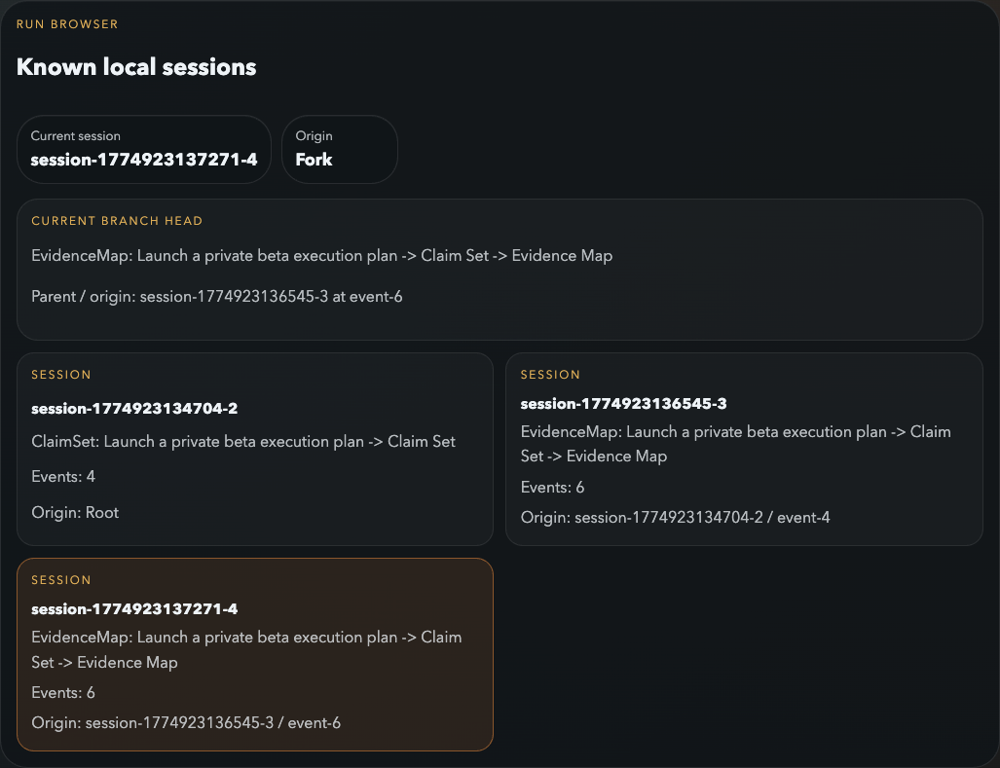

1. Build a little run universe
The normal run browser still tells you what exists.
Keep using checkpoints, forks, and imports the same way you already do. The constellation reads that durable workspace state; it does not invent a new branch model.

Same sessions, different lens
The constellation reads the exact same run journals shown in the browser.
Forks matter
Once you branch a run, the map has real ancestry to show instead of a flat list.